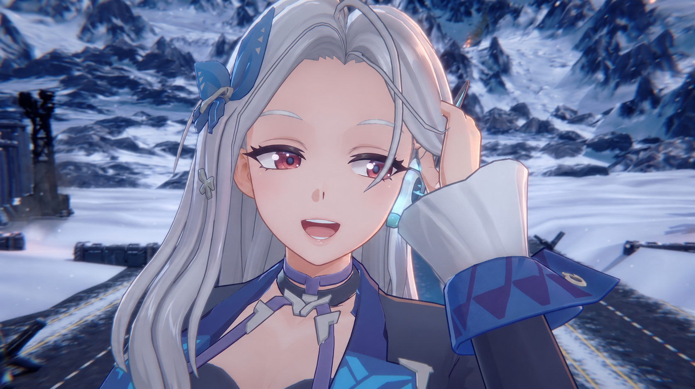
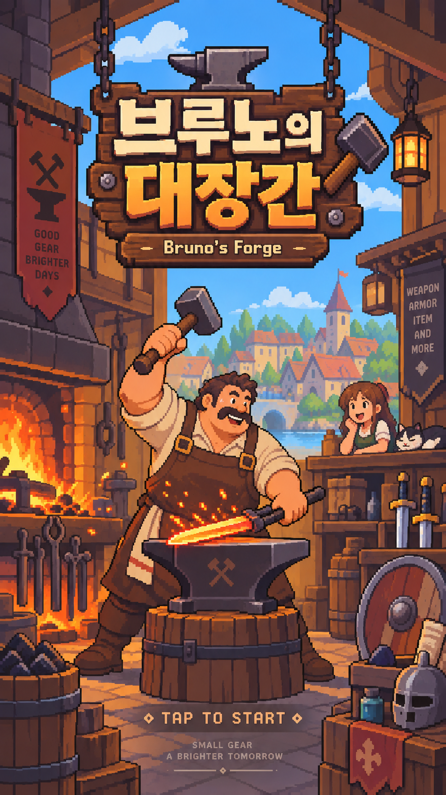
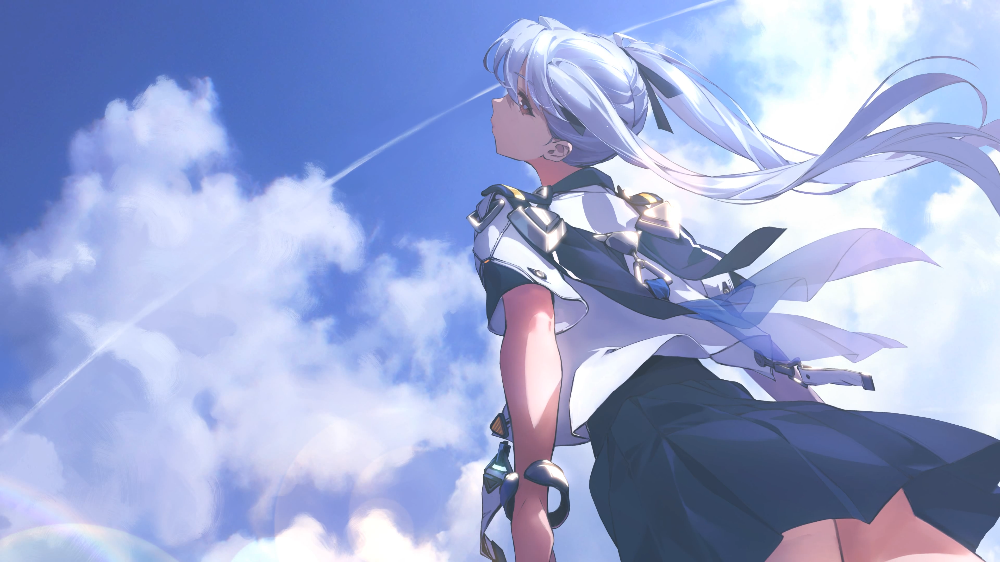

AI는 개발 속도를 높이는 도구를 넘어, 더 나은 결정을 내리는 엔진입니다. 유사 장르를 AI로 분석하고 유저 경험을 검증하며, 디렉터의 직관이 빠지기 쉬운 함정을 걷어냅니다. 더 적은 시행착오로, 더 확실하게 재미에 도달합니다.
01 / OUR GAMES
당신의 다음 세계를 만나보세요.

STEAM↗SteamPC
ROGUELITE / THIRD-PERSON SHOOTER
HEAVENBREAK
무기와 스킬을 조합하고, 거세지는 공세 속에서 셸터를 지키세요.

개발 중↗AndroidApp Store
CRAFT / MERGE / EXPLORE
브루노의 대장간
작은 대장간에서 시작되는 큰 모험. 무기를 만들고 모험가의 다음 여정을 준비하세요.


개발 중↗AndroidApp StorePC
SUBCULTURE / MECHANIC SHOOTING
TERRARIUM
서브컬처의 감성과 메카닉 액션이 만나는 세계를 탐험하세요.
Studio
We build gameswe’re proud of.
GPUN은 우리가 만드는 게임에 무한한 자부심을 갖는 게임 개발사입니다.
서브컬처의 감성과 메카닉 액션의 밀도를 결합해,
전 세계 유저가 오래 기억할 수 있는 게임을 만들고 있습니다.
- Vision
- Game Pride Is Unlimited
- Focus
- Subculture
Mechanic action
Global experience - Project
- HEAVENBREAK
Bruno’s Forge
TERRARIUM - Goal
- Games we’re proud to show
Philosophy
Fun, Fast, Fearless
AI를 더 나은 결정과 더 빠른 제작, 더 과감한 도전의 엔진으로 삼아 GPUN만의 게임 개발 방식을 만들어갑니다.
AI를 활용하여 기획서 오류를 체크하고, 리팩토링 기간을 30% 단축시키며, 캐릭터 제작 효율은 50% 향상시킵니다. 47명의 팀이 대형 스튜디오의 속도를 따라잡습니다. 이것은 목표가 아니라 GPUN에서 지금 일어나고 있는 일입니다.
AI가 게임을 어떻게 바꾸는지, 그 답을 가진 회사는 아직 없습니다. GPUN은 그 답을 가장 먼저 찾고 가장 빠르게 움직입니다. 2030년 개발 전 공정의 AI화를 향해, AI 시대 게임의 기준을 만드는 일에 우리는 망설이지 않습니다.
03 / MEDIA